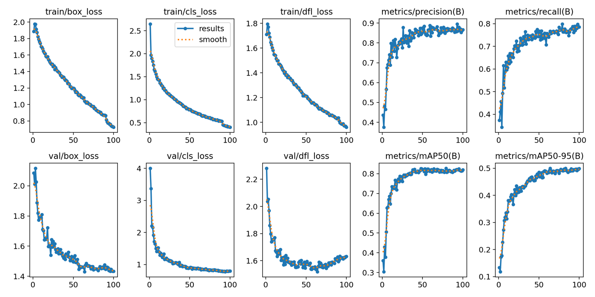
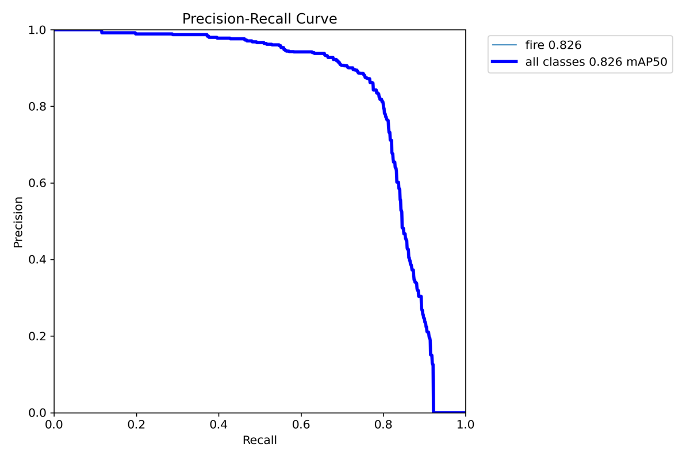
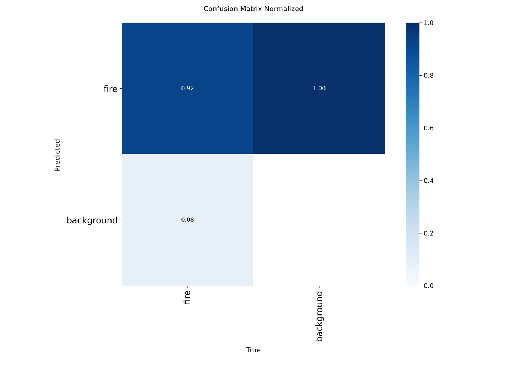
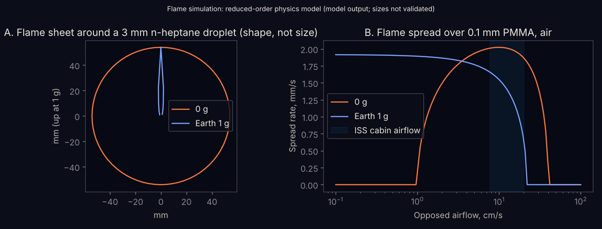
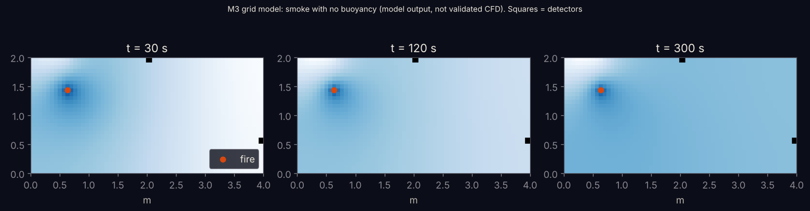
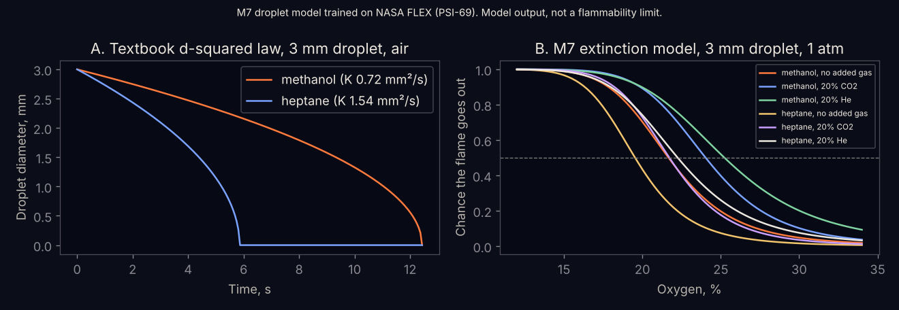

Flame in Freefall · our prototype
In orbit,
nothing
rises.
A fire in a spacecraft has no plume and smoke drifts anywhere. We built a camera that finds the flame and places it in 3D, then a model that predicts how it spreads and how risky it is.
See the demos ↓Illustration, not data
01
Detect the flame
A YOLO model we trained finds flames in a camera frame in real time.



02
Locate it in 3D
A depth model turns the same frame into distance, so the flame gets a position in 3D and an estimated size.
03
Sense the smoke
An optical sensor reads scattered light and airflow to characterise the smoke and tell it apart from dust.
04
Simulate & rate the risk
The flame goes into our spread model, calibrated on NASA's own space-station burns. Change the air and watch it react.




Built in 48 hours.
Every number on this page comes from our own models or NASA's data, and each one is labelled with which.
Method, checks & sources ↗